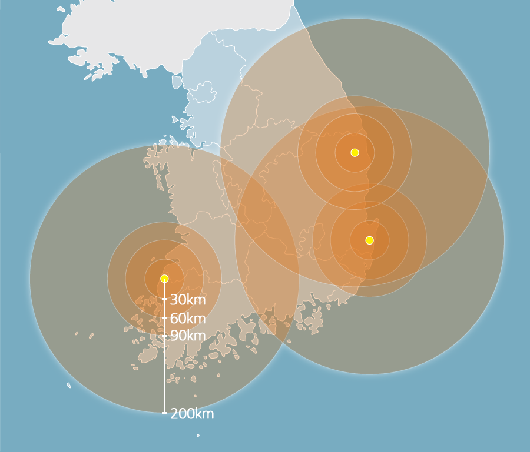
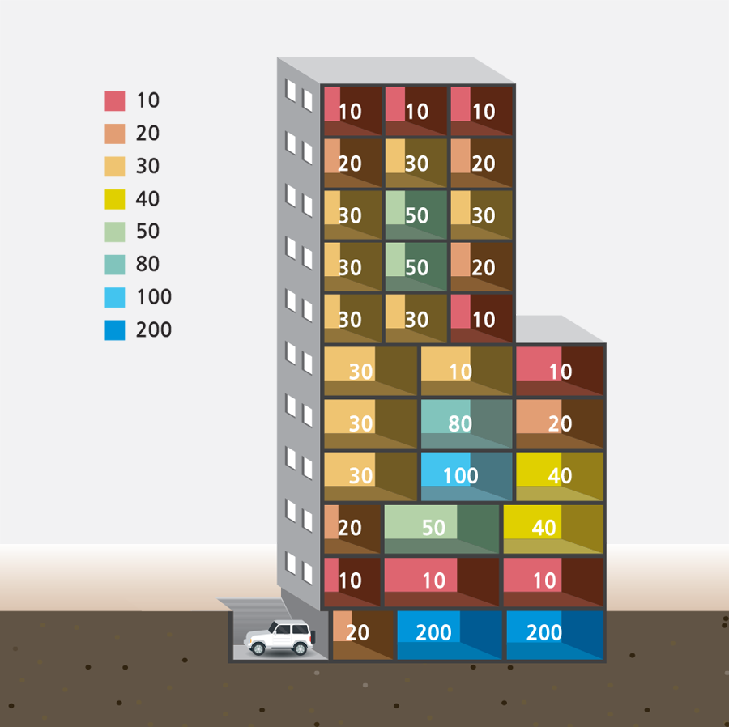
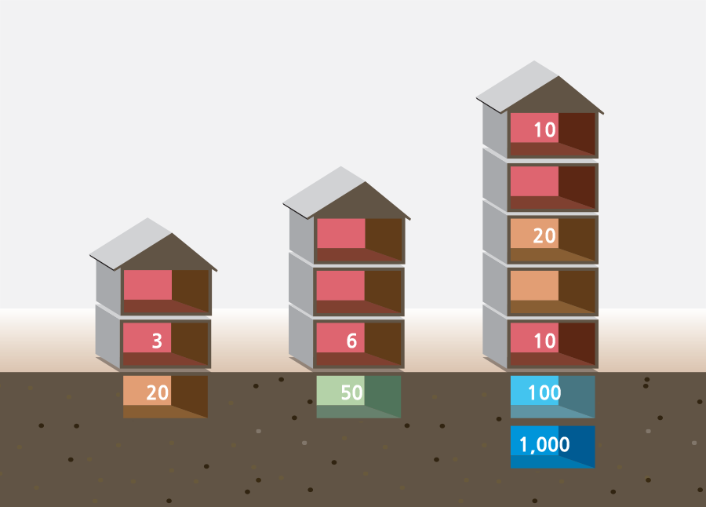

방사능 먼지는 빠른 속도로 퍼져 24시간 이내에 훨씬 넓은 지역이 오염됩니다. 방사능 낙진의 영향권에 드는 시간은 바람이 부는 방향과 속도에 따라 달라지며, 폭발의 규모에 따라서도 오염 지역은 더 넓어질 수 있습니다.
미국 국토안전부의 비상관리 매뉴얼에 따르면, 사고지역으로부터 반경 16~32km 이내는 방사능 낙진의 직접영향권 비상지역 1, 80~100km 까지는 방사능 물질이 식수와 농작물을 오염시키는 간접영향권 비상지역 2로 선포됩니다.
 SOURCE: Planning Guidance for Response to a Nuclear Detonation by U.S. Homeland Security Council
방사능 낙진의 피해를 최소화하는 방법은 모든 문과 창문을 닫고 실내에 머무는 것입니다. 콘크리트 차단벽, 즉 ‘쉴드’가 많은 건물의 안쪽(중심부)과 지하 2~3층 같은 곳이 안전합니다.
단층 목조 건물은 ‘쉴드’ 기능을 거의 하지 못합니다. 콘크리트나 벽돌재 건물의 지하실로 대피하세요.